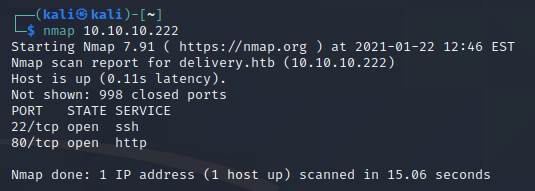
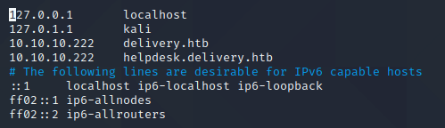
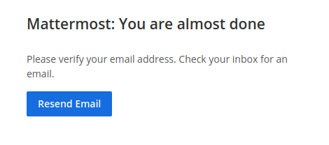
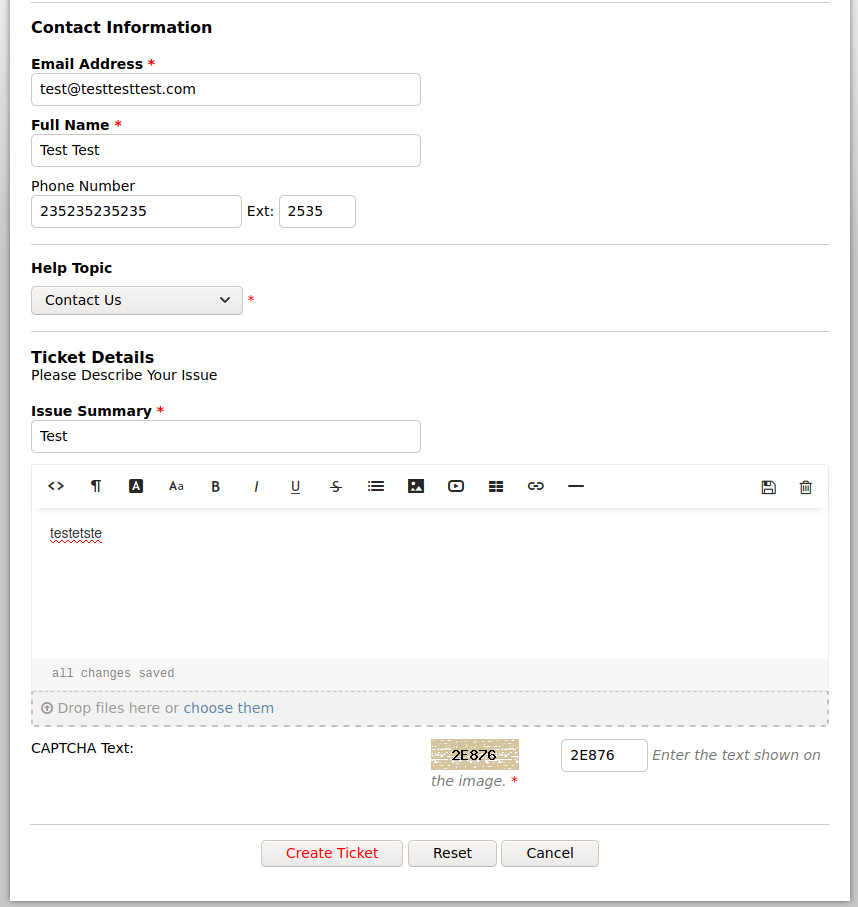
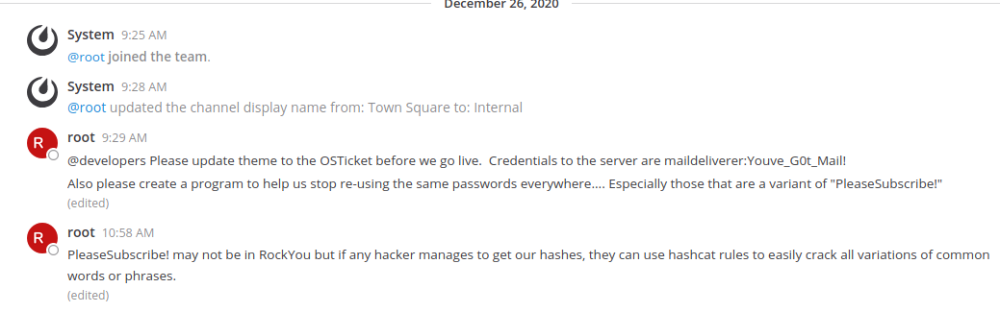
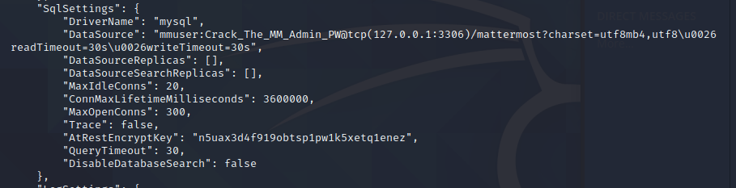

So we are going to be looking at an easier box which was the delivery one on hackthebox.eu, altough it is a pretty crazy one when it comes to enumeration and sort of guessing what is going on.
Initial Enumeration
Lets take a look at the open ports:

We can see that it is running the common ssh service plus a web server on port 80. Lets head over to their website to see if we can find anything valuable to use.
Their website is looking pretty nice, but that is beside the point :D Upon looking around we can immediately find the helpdesk link, and within "contact us" there is another link to the mattermost server. Altough, we are currently not able to access these pages since we are missing the correct settings to resolve the hostnames. So let's fix that: 
As seen in this image, we can simply add both the helpdesk.delivery.htb as well as the normal delivery.htb domain into the hostfile, so it will resolve the correct ip address.
User Foothold
As we look at the Mattermost webpage, we don't seem to be able to create an account since it does require an invite token or a pre-confirmed e-mail address:

This means, that there has got to be something more. Let's take a closer look at the helpdesk. As we navigate to helpdesk.delivery.htb we can see that there is also an option to create an account, but same thing: we would need to confirm our e-mail address. This gives us a pretty good idea on the goal of the first foothold, which is getting hold of a confirmed address.
There is, however, other options on the helpdesk: We can open a new ticket and check the ticket status as guest. Let's try that and see if we can find something of good value there. We simply fill the page with random information, and choose the only option that is currently available to us: "Contact Us". 
As we submit the ticket, we are greeted with a confirmation message that is also mentioning an e-mail address which we can contact. This address uses the exact ticket id as our ticket in the user so in my case it is 7743418@delivery.htb. As we have stumbled upon some clues before when we were not able to create an account, we can be certain that this e-mail which seems to be newly created is another clue to solving the puzzle. Let's try to log in! This is simply a problem of guessing: Using the e-mail address given to us does not work, but it does recognize the address we have specified in the ticket submission as registered now. After guessing again, we find out that the password is our ticket id, and we are in!
Since this is a ticketing service, and we now have access to the tickets on 7743418@delivery.htb, we can head over to the Mattermost software and sign up with said address. And just as expected, we will get our confirmation link in the form of a post in the ticketing software. So we successfully logged in to mattermost and have access to the internal chat.
Grabbing the user flag
Right in the internal chat, we can literally just read the credentials and use them to log in to the maildeliverer server, which will give us our first user hash/flag:

Enumeration is key
So now we have the user flag. For this box, it is really important to do a lot of enumeration and find the right foothold. It can be a pain, since we don't really know what we are searching for. But luckily, we already have some clues within the internal chat: "if any hacker manages to get our hashes...". So this gives us a pretty good idea as to what we are looking for.
Now the right path to go down, is to search for the Mattermost configuration files, which are stored in /opt/mattermost/config. There we can find a file called "config.json", which contains our next clue to go down the road of cracking our root password: 
If you have read everything carefully, you could not miss the part where it gives us a hint as to where we have to search. The SQL username and password are given to us and even contain another hint: "Crack_The_MM_Admin_PW", MM in this case being Mattermost.
We can now log in to the mysql database using our credentials, and retreive the hash for our admin account on mattermost, the username being root. "select * from Users where username = 'root';"
Now what?
So now we have our hash. The internal chat on mattermost told us, that we are able to crack it using common words and phrases, hashcat rules and it also gives us an example password: "PleaseSubscribe!".
Putting all these things together we have a rough idea on what we are supposed to do. Breaking it down:
The hash is a bcrypt hash, so we are using mode 3200 according to the man page. As for the exact commands they are:
Watch as the magic happens :D